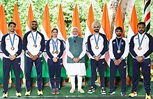

India is to compete at the 2024 Summer Olympics in Paris, France, from July 26 to August 11, 2024.
Indian athletes have started qualifying for the 2024 Olympics.
India is to compete in various sports, including:
Indian athletes have medal in:
India competed at the 2024 Summer Olympics in Paris, France, held from 26 July to 11 August 2024. The country made its debut at the 1900 Summer Olympics. Indian athletes have appeared at every edition of the Summer Olympic Games since 1920 and the Paris Games edition marked India's 26th appearance at the Summer Olympics.
The Indian contingent consisted of 110 athletes who competed in 16 sports. P.V. Sindhu and Sharath Kamal were the flag-bearers for the opening ceremony. Manu Bhaker and P. R. Sreejesh carried the Indian flag during the closing ceremony.
India won six medals including a silver and five bronze to be ranked 71st amongst the 206 NOCs that participated in the Olympics. This was India's third-best medal haul after the 2020 and 2012 respectively. Manu Bhaker won two bronze medals in shooting and became the first Indian to win two medals in a single Olympics since India gained independence. Neeraj Chopra, who won a silver medal in the men's javelin throw event, became the first Indian individual medalist to win a gold and silver at the Olympics. Wrestler Aman Sehrawat, who won a bronze medal became the youngest ever Indian medal winner in the Olympics.
India's previous performances at the Summer Olympics:
For more information visit:
Wikipedia Article
Official Olympic Website